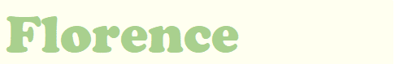

| | | | | | |  |
|
The city of Florence was given the nickname "cradle of the Renaissance" because it is where the Renaissance began. Given this history, Florence is home to many palaces and churches that date back to the Renaissance. There are also many museums dedicated the Renaissance time and the city is filled with Renaissance architecture. Florence is also well connected with other Itlaian cities so transportation is not a problem.
Scroll down to see some activities and sights you can see here as well as videos showcasing these places. |
| Place | Link to Video |
|---|---|
| Visit the Uffizi Gallery | link |
| Visit Piazzale Michelangelo | link |
| Go to the Iconic Duomo | link |